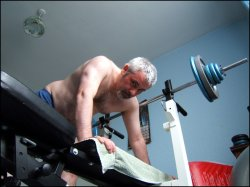

So … you want a great body?
Some would say this desire is wrong, others that there’s nothing wrong with it, but I tend to take the middle road (perhaps a sign of weakness) and say that it’s fine in moderation. Either way, this article will steer happily clear of that particular issue, and instead address what to do if you do decide to shape up for the summer.
And summer is only just around the corner. I, for one, would certainly like to be bigger than Ben Hur when I crack out the singlet and stubbies for the next half-year. So, with hundreds of others, I will very soon be making a pre-emptive strike on my winter misshapenness, renewing my gym membership and attempting to improve my physique before summer actually arrives. And I’ll be doing this all at the local gymnasium.
There is a problem, though. Visiting the gym is easy. Visiting the gym with style, however, is a whole different ball game. Here are some tips to ensure the attempt to sculpt your body for the warm season doesn’t become a fashion disaster.
There are some things you definitely should do at the gym. The first is to bring a towel to wipe up your sweat. Benches, rowers, treadmills and cross-trainers all accumulate a lot of moisture during a workout, and it’s up to you to clean up the mess. Wiping is a courtesy.
Ladies, to maintain decorum, wear a sports bra. Jordan Wilson, gym-goer of almost six years, described to me the consequences of not: “I once saw a woman riding an exercise bike so vigourously that her breasts flapped. It wouldn’t have been so bad if it wasn’t accompanied by constant grunting.”
Wear deodorant. I know of people leaving a gym because of an individual’s body odour. It’s not fashionable to be that person.
There are also a number of don’ts for the budding Dan Carter or Mandy Smith. Like don’t wear lycra. I once heard of a woman wearing a blue lycra bodysuit, coupled with tan stockings, to a Victoria University Fitness Centre pump class. Unlike mullets, lycra has not made a comeback since the ’80s.
Another clothing item to avoid is the ripped singlet. In fact, try not to wear anything ripped. Unless you’re going for the Chuck Norris look, checkered shirts with the sleeves torn off are a particularly unwise choice. Whether you like it or not, the term poser will immediately be thrown your way.
Speaking of posers, don’t make loud noises while you pump that iron. Grunting does not make the weights any lighter. An example is a character at my gym – he’s nicknamed Grünter due to the exceptionally loud groans that escape his lips at every bicep curl or bench press.
Grünter breaks the final rule too – don’t boast about your body during your workout. I’ll never forget the day I overheard, “Mate, when you have an arm girth of eight inches you can start telling me how to lift weights!” Grünter then went on to explain to the gym that he was once nicknamed “Chopsticks” because of his “massive” upper arms.
Have fun in the gym this year, but remember, you now only have yourself to blame if you make a fashion faux pas.
“Tim Sterne is an exquisite juxtaposition of rural ruggedness and mild metrosexuality. He writes with a peremptory snort. Simply sublime.” – Daily Telegraph